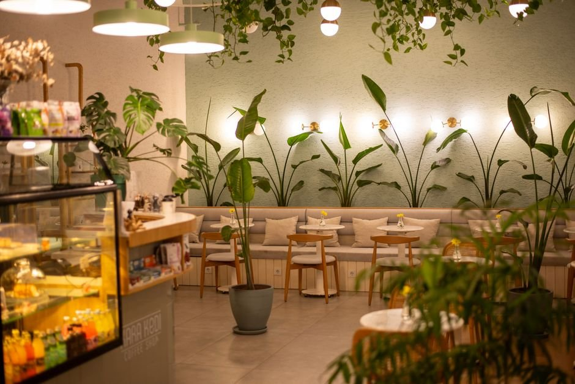
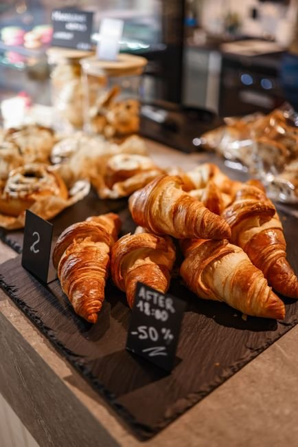
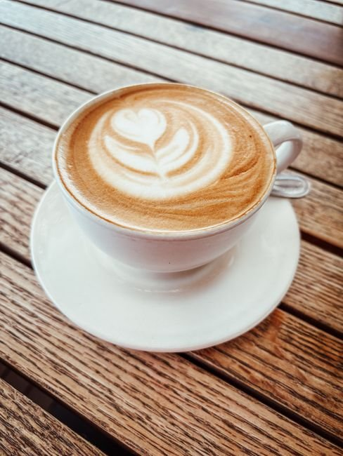

Detalles que enamoran
Un oasis verde en medio de la ciudad
Luz natural tenue, rincones de lectura, madera envejecida y un ambiente diseñado para desconectar del bullicio urbano.

Música chill, plantas vivas y el aroma inconfundible de la pastelería recién horneada en el corazón de Buenos Aires.
Un espacio donde el tiempo se desacelera. Rodeado de vegetación natural, piezas de madera barnizada y detalles vintage en tonos suaves, Dante en Verona es un remanso de paz frente al ritmo de la ciudad.
Fermentación natural para una digestión liviana y una miga llena de carácter.
Elaboración propia diaria con frutas de estación, miel pura y granola crujiente.


Luz natural tenue, rincones de lectura, madera envejecida y un ambiente diseñado para desconectar del bullicio urbano.
"El pollo a la mostaza estaba increíblemente bueno. Lo mejor que he comido en Buenos Aires hasta ahora. El personal fue muy amable y atento. El ambiente es hermoso. Las plantas le dan al espacio un aire fresco y un oasis encantador en medio del calor de la ciudad. Perfecto."
"¡Hermosa cafetería! Me encanta la vibra medieval. Pedí el roll de canela y el latte de caramelo y ambos estaban increíbles."
"Me encanta la atmósfera aquí, la decoración es realmente genial y la música muy chill. He estado allí dos veces a tomar café y estuvo delicioso ambas veces."
"El café estuvo muy bueno y es un lugar realmente hermoso para relajarse o conversar."
Av. Gral. Las Heras 2999, C1425 Cdad. Autónoma de Buenos Aires, Argentina
Abrir en Google Maps →Llamanos directamente a nuestro local para grupos o consultas especiales.
📞 Llamar al +54 11 3070-3310